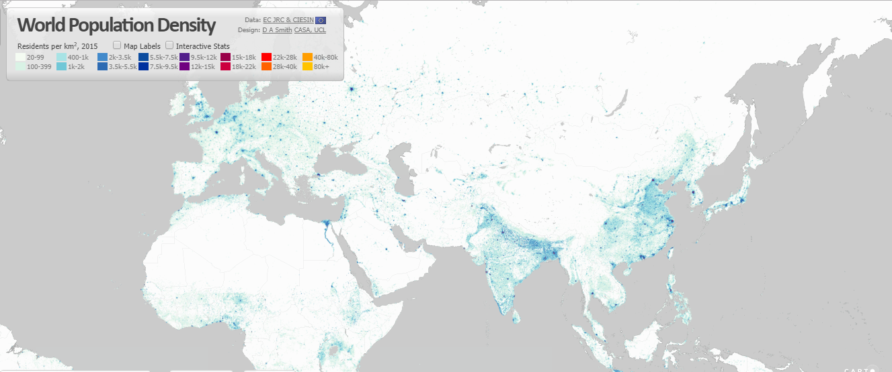

Wan ChantavilasvongI am interested in rural development especially in how built environment in rural areas can incentivize resource sharing from urban areas to create sustainable rural towns. I believe in participatory processes as key tools to achieve long-term economic and environmental sustainability in rural areas.  |